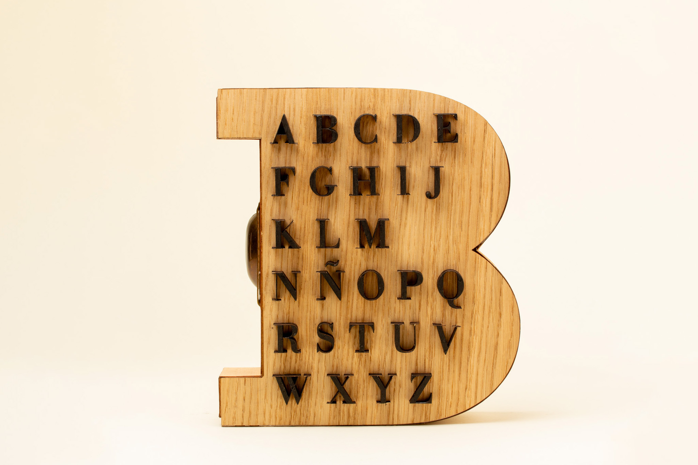
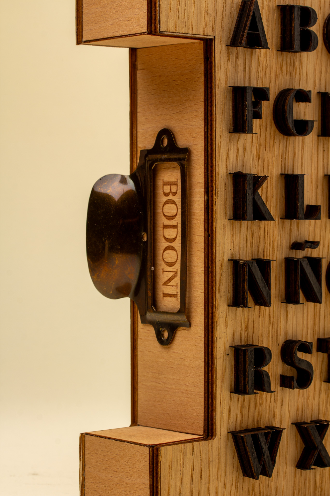
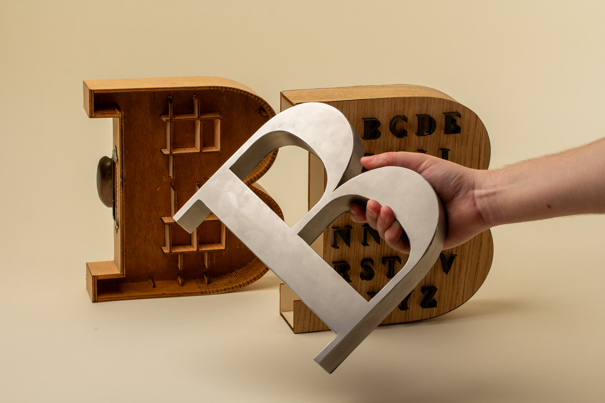
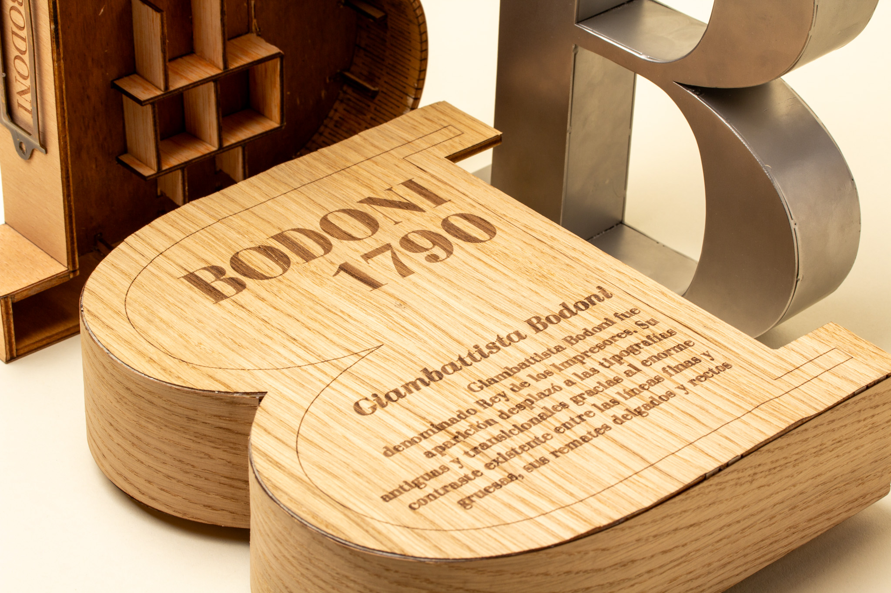

Bodoni
Un homenatge a l’impressor Giambattista Bodoni i la seva tècnica de tipus mòbils. El projecte planteja un caixó amb la silueta de la lletra ‘B’ (per la seva inicial) i una sèrie de mòduls per a la resta de l’abecedari, reservant un buit per a una lletra de gran format.